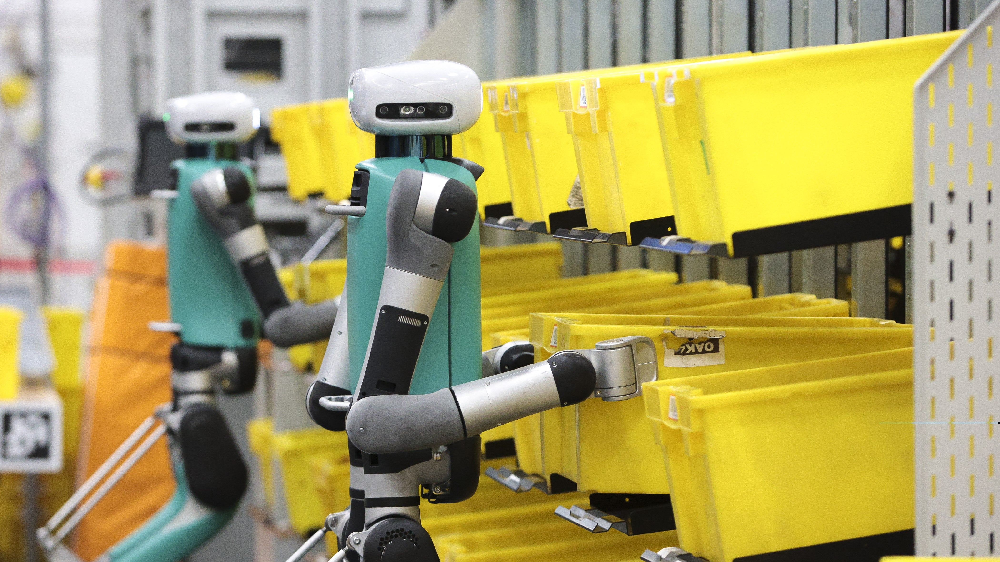

Robôs Colaborativos (Cobots)
A Revolução na Automação Industrial
O que são Cobots?
Robôs projetados para trabalhar diretamente com seres humanos, complementando habilidades em vez de substituí-las.

História e Evolução
Os cobots surgiram no final dos anos 1990, evoluindo dos robôs industriais tradicionais que eram grandes, rápidos e perigosos. Ao contrário dos robôs tradicionais, os cobots são projetados para interagir de maneira segura com os humanos, tornando-se assistentes essenciais nas linhas de produção modernas.
Características Técnicas
Os cobots possuem sensores avançados, inteligência artificial e são programáveis por interfaces intuitivas.
- Câmeras 3D e LiDAR
- Sensores de força, torque e câmeras 3D
- Inteligência Artificial (IA) e Aprendizado de Máquina (ML)
- Facilidade de programação com interfaces intuitivas

Benefícios dos Cobots
Os cobots proporcionam vantagens como:
- Aumento da produtividade e qualidade
- Melhoria da segurança no trabalho
- Flexibilidade operacional
- Segurança do trabalho
- Redução de custos

Desafios e Limitações
Alguns desafios dos cobots incluem:
- Limitação de carga e velocidade
- Integração com processos tradicionais
- Custos iniciais elevados

Impacto na Indústria 4.0
Cobots são fundamentais para fábricas inteligentes, conectadas e descentralizadas, permitindo automação avançada e produção adaptativa.

Normas de Segurança
As normas ISO 10218-1 e ISO/TS 15066 garantem que os cobots operem com segurança ao lado de humanos, limitando forças de impacto.

Vídeo: Exemplo de cobots na industria
Vídeo: Exemplo de cobots na Medicina
Desafios Éticos: Substituição de Empregos
O avanço da automação pode impactar o emprego, especialmente em setores com funções repetitivas. A automação pode levar à substituição de empregos em grande escala.
Requalificação e Capacitação
Especialistas recomendam a requalificação da força de trabalho para funções relacionadas à manutenção e programação de cobots, gerando novas oportunidades de emprego.

Vídeo:Robo na amazon
Questões de Justiça Social e Desigualdade
A automação beneficia grandes corporações, mas pode aumentar as desigualdades ao impactar trabalhadores de regiões mais pobres e setores dependentes da manufatura.

Considerações Finais
Cobots estão transformando a indústria com segurança, flexibilidade e eficiência, mas requerem atenção aos impactos sociais e ao futuro do trabalho.
Sistema de Visão Computacional
Inspeção Automatizada
Introdução
A Visão Computacional utiliza técnicas de IA e aprendizado de máquina para permitir que máquinas "vejam" e interpretem o mundo visual.
Uma de suas principais aplicações é na inspeção automatizada, utilizada em indústrias para controle de qualidade.
Histórico
- Década de 1960: Primeiros experimentos em reconhecimento de formas e objetos.
- Década de 1970: Os pesquisadores começaram a desenvolver algoritmos para interpretar imagens em escala de cinza.
- Década de 1980: David Marr publica o livro Vision, propondo uma teoria computacional da visão.
- Década de 1990: A visão computacional começou a ser aplicada em um conjunto mais amplo de áreas, e novos algoritmos de análise de imagens foram desenvolvidos.
- A partir dos anos 2000: Evolução dos algoritmos de Machine Learning e Deep Learning.
O que é Visão Computacional?
- Aquisição, processamento e análise de imagens.
- Tarefas como reconhecimento de padrões, segmentação e rastreamento de movimento.
Seu objetivo é permitir que máquinas realizem tarefas visuais de forma semelhante ao ser humano.
Processo Básico

Inspeção Automatizada
A inspeção automatizada usa sistemas de visão computacional para verificar produtos e processos.
- Garantia de qualidade
- Detecção de falhas
- Supervisão de operações
Aplicações de Inspeção Automatizada
- Eletrônicos: Detecção de defeitos em placas de circuito impresso (PCBs)
- Automotiva: Verificação de montagem de peças
- Alimentos: Verificação de embalagens e qualidade de produtos
- Têxtil: Detecção de falhas em tecidos
Tecnologias Envolvidas
- Câmeras Industriais: Captura de imagens de alta resolução.
- Algoritmos de Processamento de Imagem: Filtros, segmentação e detecção de bordas.
- Inteligência Artificial: Uso de redes neurais convolucionais (CNNs).
- Sensores e Iluminação: Sensores especializados e iluminação adequada para captura de imagens.
Benefícios da Inspeção Automatizada
- Precisão: Inspeções consistentes e livres de erro humano.
- Eficiência Operacional: Inspeção em tempo real, com correções rápidas.
- Redução de Custos: Menos desperdício de materiais.
- Segurança e Conformidade: Garantia de que os produtos atendem aos padrões de qualidade.
Desafios
- Custo Inicial: Alto investimento em câmeras, sensores e software.
- Complexidade de Integração: Integração com processos produtivos pode ser complexa.
- Ambientes Variáveis: Mudanças nas condições de iluminação e ambiente afetam a precisão.
Referências
- Marr, D. (1982). Vision. W. H. Freeman and Company.
- LeCun, Y., Bengio, Y., & Hinton, G. (2015). Deep learning. Nature, 521(7553), 436–444.
- Forsyth, D. A., & Ponce, J. (2012). Computer Vision: A Modern Approach. Prentice Hall.